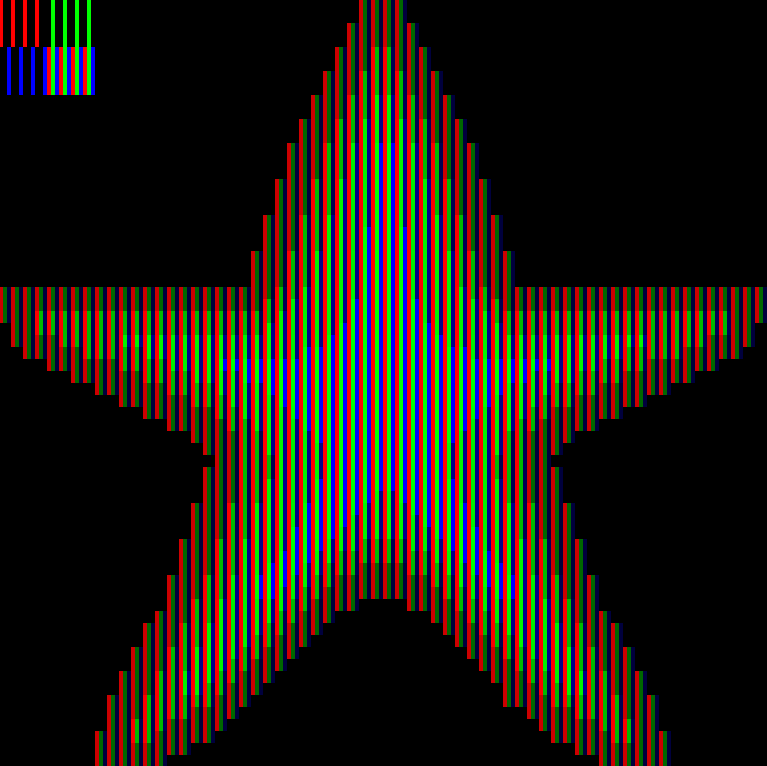
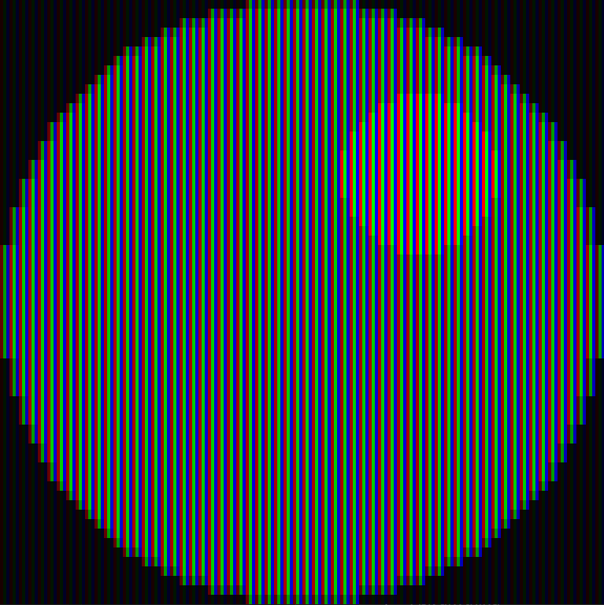
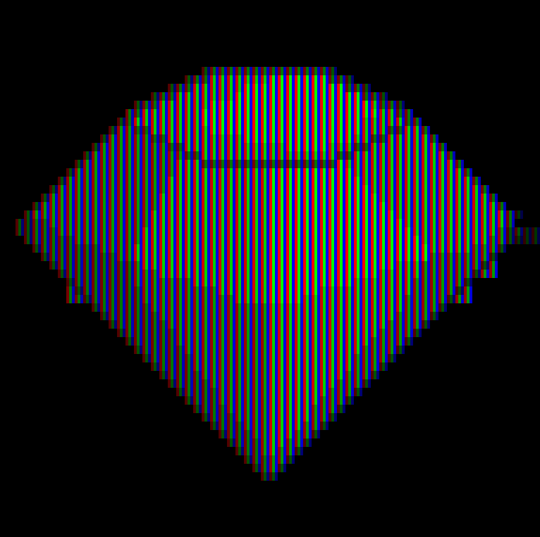
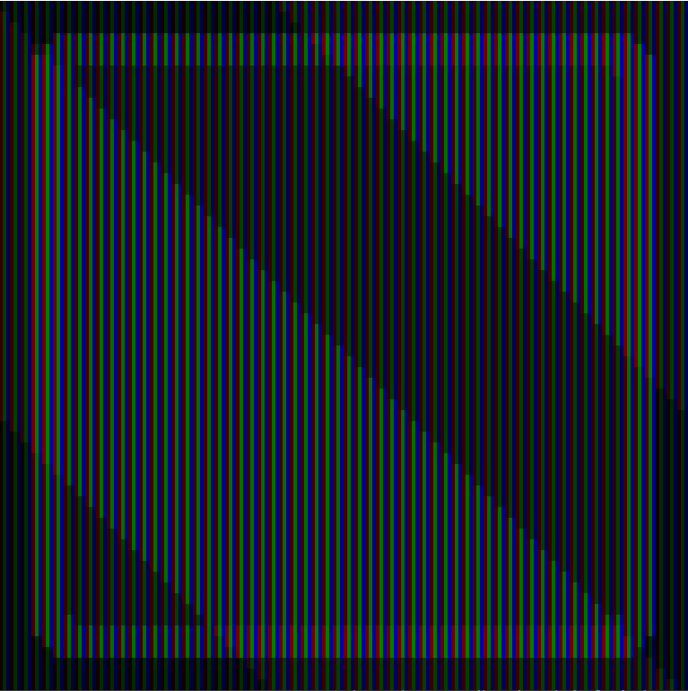
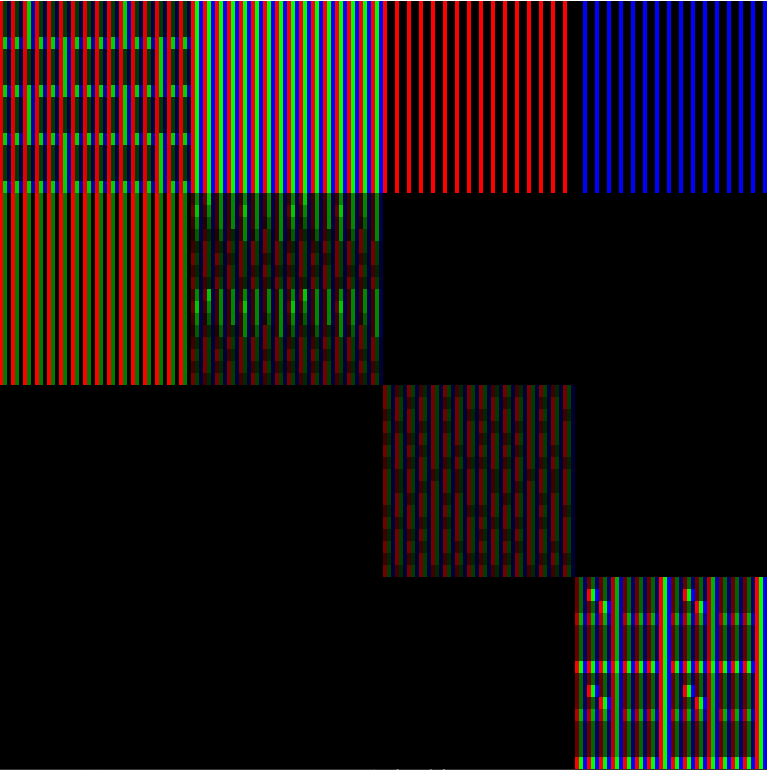
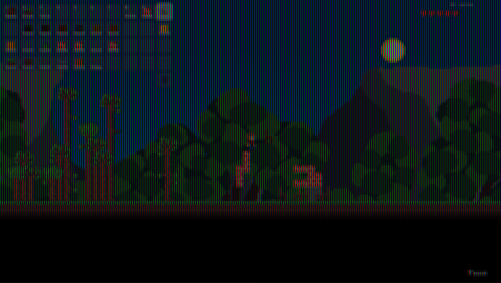
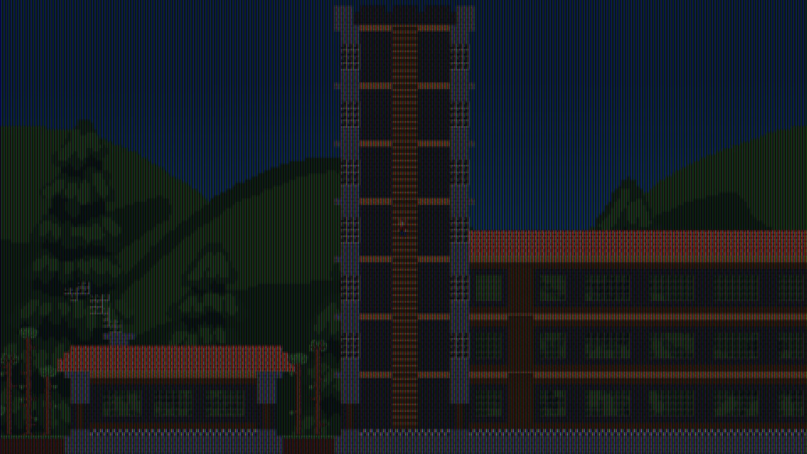

Screen Simulation
Daniel Vishnevsky

About
2D screen simulator and sprite renderer capable of drawing rectangles and sprites. Made with C++ and SFML.
Features
A simple 2D screen simulator that simulates each pixel using 3 rectangles - red, green and blue. Using this you can draw anything you want. It achieves this cool effect and when you look from afar or squint your eyes it looks real - just like the screen does but under a tellescope. But it doesn't handle transparency that well, that's either because my sprites had some artifacts or because there are issues under SFML since my code is very simple.
Development
This is a very simple and fun project to make. It popped up in my head and I made it the very same day. If I was to create it today I would add more drawing options like lines and triangles. Maybe even implement a 3D engine under it? Stop giving me ideas! Source code is available on Github.
Gallery





